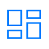
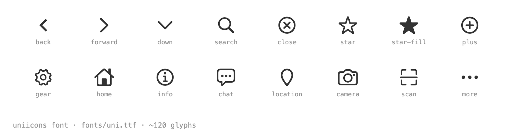

Use glyphs as text
class="uni-icon uni-icon-search" renders through the bundled font.
Iconography
Use the bundled icon font for controls, navigation, social and media actions. Keep icons monochrome in component chrome; reserve blue/status colors for active or semantic states.
Usage rules
No substitute icon set unless the glyph is missing. No emoji in product UI.
State color
Raster tab icons
This follows Mini-Program conventions: font icons for in-page UI, raster image pairs for bottom tabs.
 内置组件
内置组件
 接口
接口
 扩展组件
扩展组件
 模板
模板

Complete specimen
Preserved from the imported source evidence; use as the exhaustive visual reference.
